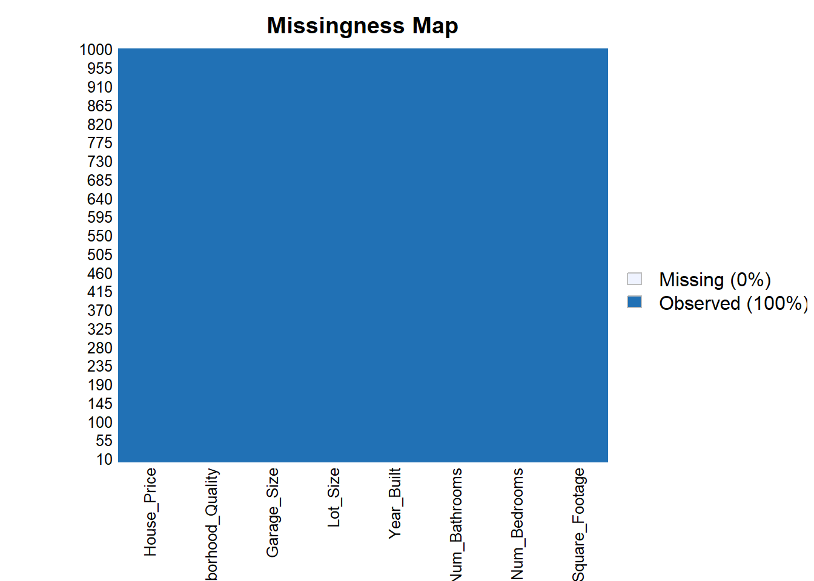

2 Extracción, transformación y carga de datos (ETL)
Antes de realizar cualquier análisis exploratorio o estadístico, es necesario garantizar que los datos con los que se trabajará sean confiables, estén completos y en un formato adecuado para su manipulación.
Este proceso, conocido como ETL (Extracción, Transformación y Carga), constituye la base de todo análisis de datos. Si esta etapa se realiza de forma deficiente, cualquier resultado o interpretación posterior, por más sofisticado que resulte siendo, quedará comprometido. De esta manera, se realizará la carga del conjunto de datos house_price_regression_dataset.csv, la identificación, el tratamiento de valores faltantes y, como último paso, el ajuste de los tipos de variable necesarios para el análisis exploratorio que se desarrollará más adelante.
2.1 Instalación de librerías
En primer lugar, se cargan las librerías necesarias para el desarrollo de este trabajo: tidyverse para la manipulación y visualización de datos mediante una sintaxis basada en el operador pipe (%>%); Amelia, utilizada para la detección visual de datos faltantes a través de la función missmap(); moments, que permite calcular medidas de forma de la distribución como la asimetría y la curtosis; patchwork, empleada para combinar múltiples gráficos de ggplot2 en una sola figura; GGally, que amplía las capacidades de visualización de ggplot2 con funciones como ggpairs() y ggcorr() para el análisis de relaciones entre variables; y Hmisc, utilizada específicamente para calcular, en un solo paso, la matriz de correlación junto con la matriz de p-valores correspondiente a cada pareja de variables predictoras mediante la función rcorr().
## Cargando paquete requerido: Rcpp## ##
## ## Amelia II: Multiple Imputation
## ## (Version 1.8.3, built: 2024-11-07)
## ## Copyright (C) 2005-2026 James Honaker, Gary King and Matthew Blackwell
## ## Refer to http://gking.harvard.edu/amelia/ for more information
## #### ── Attaching core tidyverse packages ────────────────────────────────────────────────────── tidyverse 2.0.0 ──
## ✔ dplyr 1.2.1 ✔ readr 2.2.0
## ✔ forcats 1.0.1 ✔ stringr 1.6.0
## ✔ ggplot2 4.0.3 ✔ tibble 3.3.1
## ✔ lubridate 1.9.5 ✔ tidyr 1.3.2
## ✔ purrr 1.2.2## ── Conflicts ──────────────────────────────────────────────────────────────────────── tidyverse_conflicts() ──
## ✖ dplyr::filter() masks stats::filter()
## ✖ dplyr::lag() masks stats::lag()
## ℹ Use the conflicted package (<http://conflicted.r-lib.org/>) to force all conflicts to become errors##
## Adjuntando el paquete: 'Hmisc'
##
## The following objects are masked from 'package:dplyr':
##
## src, summarize
##
## The following objects are masked from 'package:base':
##
## format.pval, units2.2 Carga del conjunto de datos house_price_regression_dataset
Se procede a cargar el conjunto de datos, correspondiente a información de viviendas residenciales individuales, con variables estructurales (superficie, habitaciones, baños, garaje), temporales (año de construcción), de entorno (calidad del vecindario) y el precio de venta observado.
## Rows: 1000 Columns: 8
## ── Column specification ──────────────────────────────────────────────────────────────────────────────────────
## Delimiter: ","
## dbl (8): Square_Footage, Num_Bedrooms, Num_Bathrooms, Year_Built, Lot_Size, Garage_Size, Neighborhood_Qual...
##
## ℹ Use `spec()` to retrieve the full column specification for this data.
## ℹ Specify the column types or set `show_col_types = FALSE` to quiet this message.2.3 Visualización del conjunto de datos y su estructura
El dataset contiene 1.000 observaciones, un número conveniente para inspeccionar.
De todas formas, para no perder la buena práctica de verificar que la carga se haya hecho correctamente y tener una primera aproximación a las variables disponibles, se mostrarán las primeras 10 filas; asimismo, para determinar qué operaciones y transformaciones son válidas, se revisará la estructura interna de los datos (tipo de dato asignado a cada variable).
## # A tibble: 10 × 8
## Square_Footage Num_Bedrooms Num_Bathrooms Year_Built Lot_Size Garage_Size Neighborhood_Quality House_Price
## <dbl> <dbl> <dbl> <dbl> <dbl> <dbl> <dbl> <dbl>
## 1 1360 2 1 1981 0.600 0 5 262383.
## 2 4272 3 3 2016 4.75 1 6 985261.
## 3 3592 1 2 2016 3.63 0 9 777977.
## 4 966 1 2 1977 2.73 1 8 229699.
## 5 4926 2 1 1993 4.70 0 8 1041741.
## 6 3944 5 3 1990 2.48 2 8 879797.
## 7 3671 1 2 2012 4.91 0 1 814428.
## 8 3419 1 1 1972 2.81 1 1 703413.
## 9 630 3 3 1997 1.01 1 8 173875.
## 10 2185 4 2 1981 3.94 2 5 504177.## [1] 1000 8## [1] "Square_Footage" "Num_Bedrooms" "Num_Bathrooms" "Year_Built"
## [5] "Lot_Size" "Garage_Size" "Neighborhood_Quality" "House_Price"## spc_tbl_ [1,000 × 8] (S3: spec_tbl_df/tbl_df/tbl/data.frame)
## $ Square_Footage : num [1:1000] 1360 4272 3592 966 4926 ...
## $ Num_Bedrooms : num [1:1000] 2 3 1 1 2 5 1 1 3 4 ...
## $ Num_Bathrooms : num [1:1000] 1 3 2 2 1 3 2 1 3 2 ...
## $ Year_Built : num [1:1000] 1981 2016 2016 1977 1993 ...
## $ Lot_Size : num [1:1000] 0.6 4.75 3.63 2.73 4.7 ...
## $ Garage_Size : num [1:1000] 0 1 0 1 0 2 0 1 1 2 ...
## $ Neighborhood_Quality: num [1:1000] 5 6 9 8 8 8 1 1 8 5 ...
## $ House_Price : num [1:1000] 262383 985261 777977 229699 1041741 ...
## - attr(*, "spec")=
## .. cols(
## .. Square_Footage = col_double(),
## .. Num_Bedrooms = col_double(),
## .. Num_Bathrooms = col_double(),
## .. Year_Built = col_double(),
## .. Lot_Size = col_double(),
## .. Garage_Size = col_double(),
## .. Neighborhood_Quality = col_double(),
## .. House_Price = col_double()
## .. )
## - attr(*, "problems")=<pointer: 0x00000289f6bb0080>2.4 Identificación de valores faltantes (NA)
Uno de los pasos más importantes de esta etapa es identificar la presencia de valores faltantes. En este contexto, ignorar los datos faltantes podría sesgar las estadísticas descriptivas y los análisis posteriores, especialmente si la ausencia de datos no ocurre de forma aleatoria (por ejemplo, si ciertas viviendas reportan sistemáticamente menos información sobre alguna característica, como el tamaño del garaje o la antigüedad de la construcción). Así, se cuantifica primero el número de valores faltantes por columna:
## # A tibble: 1 × 8
## NA_Square_Footage NA_Num_Bedrooms NA_Num_Bathrooms NA_Year_Built NA_Lot_Size NA_Garage_Size
## <int> <int> <int> <int> <int> <int>
## 1 0 0 0 0 0 0
## # ℹ 2 more variables: NA_Neighborhood_Quality <int>, NA_House_Price <int>## Warning: Unknown or uninitialised column: `arguments`.
## Unknown or uninitialised column: `arguments`.## Warning: Unknown or uninitialised column: `imputations`.
El conteo de NA arrojo cero en todas las columnas, y el mapa de Amelia confirma una matriz de datos completa (100% observado).
2.5 Identificación de valores duplicados
## [1] 0El conjunto de datos tampoco contiene filas duplicadas, por lo que se conservan las 1.000 observaciones originales.
2.6 Conversión a variables categóricas
Las variables discretas Num_Bedrooms, Num_Bathrooms y Garage_Size se convierten a factor con el fin de poder usarla en tablas de frecuencias y diagramas de caja, siempre conservando en paralelo su versión numérica original. Por su parte, Neighborhood_Quality se convierte a un factor ordenado, dado que representa una escala ordinal referente a la calidad (con 1 = más baja, 10 = más alta).
2.7 Verificación de rangos plausibles
## [1] 1 10## [1] 1950 2022## [1] 111626.9 1108236.8## [1] 0.5060582 4.9893027## [1] 503 4999Los rangos son plausibles para un conjunto de viviendas residenciales, sin valores negativos ni atípicos evidentes por error de digitación. Neighborhood_Quality cubre la escala completa del 1 al 10; Year_Built va desde 1950 a 2022; Lot-Size entre 0.5 y 5 acres, y Square_Footage entre 503 y 4.999 pies cuadrados.